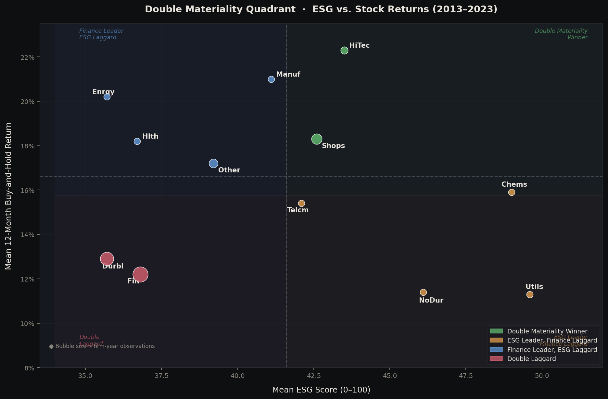
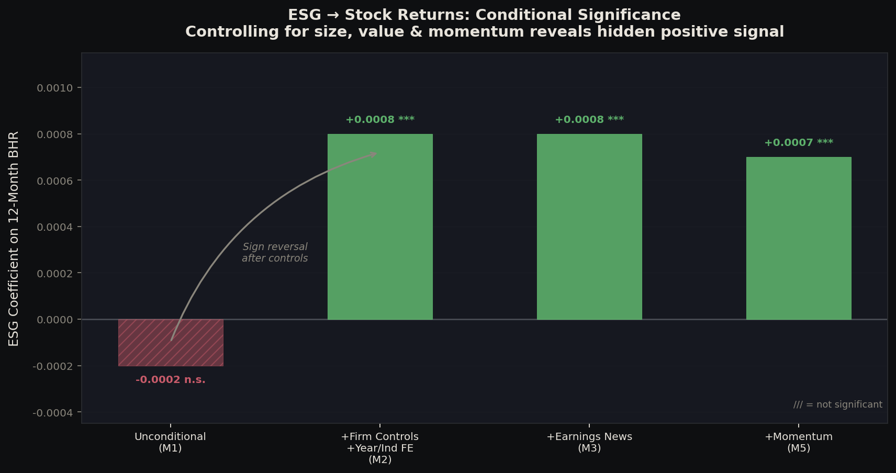
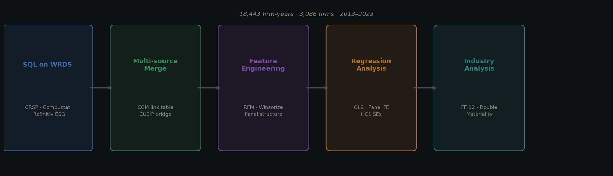
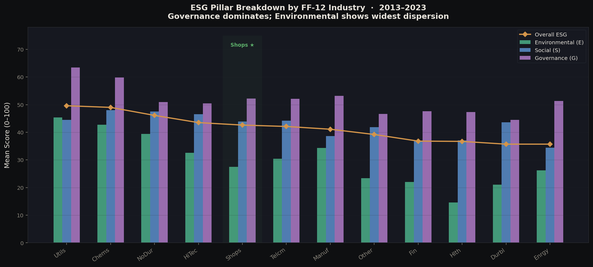
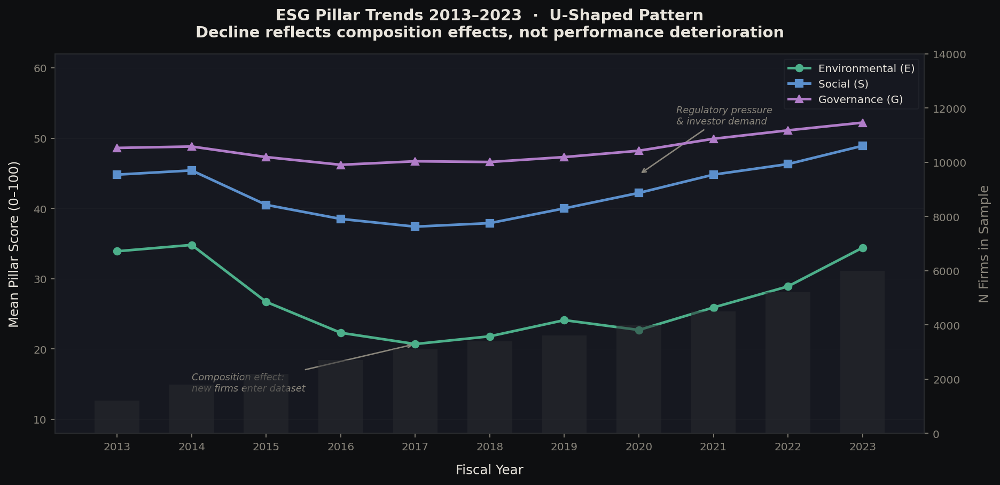

Group Research Project · RSM 8224 · Rotman / UofT
ESG Performance &
Financial Returns
Panel econometrics study on whether doing good means doing well — integrating three institutional databases across 3,086 U.S. firms over 2013–2023.
Key findings
Does ESG predict future profitability (ROA)?
No — after controls
A strong unconditional ESG–ROA correlation (R² 0.054 → 0.509) vanishes entirely once firm size, leverage, and fixed effects are added. ESG proxies for firm quality, not operational alpha.
Does ESG predict stock returns?
Yes — conditionally
Unconditional coefficient is negative (size bias). After size/value controls: +0.0008 (p=0.002). A 1 SD increase in ESG ≈ +1.5 pp annual return. Disappears under firm FE → cross-sectional signal only.
What is the dominant driver of ESG scores?
Firm size (+7.1 pts/log unit)
Size is stable across all specs (M1: +6.68, M2: +7.11). R&D flips to −11.0 after FE, revealing a within-industry trade-off: innovation and ESG compete for the same discretionary budget.
Best sector for ESG-conscious investors?
Shops (Wholesale/Retail)
The only FF-12 industry that is a double materiality winner on both BHR (18.3%) and ROA (5.5%). Supply chain management structurally links ESG and profitability — not coincidental momentum.

Figure 1 — Double Materiality Quadrant (ESG vs. 12-Month Buy-and-Hold Return)
Bubble size proportional to firm-year observations. Dashed lines = cross-industry medians (ESG = 41.6; BHR = 16.6%). HiTec and Shops qualify as double materiality winners on BHR; only Shops wins on both BHR and ROA. HiTec's alignment is momentum-driven; Shops' is structural.
Analytical highlight
The ESG → Returns Sign Reversal
This is the core finding that distinguishes this analysis from a naive ESG study. In the raw data, the ESG–return relationship appears slightly negative — because high-ESG firms tend to be large, low-book-to-market firms, which are exactly the firms expected to earn lower returns (the size and value premia work against them).
Once those confounders are removed, a hidden positive signal emerges: among firms of comparable size and valuation, higher-ESG firms earn modestly but significantly higher conditional returns. This reversal is the opposite of the ROA channel, where controls eliminate an initially positive correlation.

Figure 2 — ESG Coefficient on 12-Month BHR Across Specifications
Hatched bars = not significant. The unconditional negative coefficient (M1) flips positive and significant (p=0.002) once size, value, and fixed effects are added. The signal survives momentum controls (M5, p=0.012) but disappears under firm FE — confirming ESG as a cross-sectional sorting variable, not a timing signal.
Key insight for operations & analytics
This is a textbook example of omitted variable bias identification and correction — a skill directly transferable to any analytics role where raw correlations mislead without proper controls. The same logic applies to A/B test confounders, attribution modeling, and causal inference in operational data.
Data pipeline
End-to-End from Institutional Databases to Panel Dataset
The most technically demanding contribution of this project is integrating three institutional-grade databases that use incompatible identifier systems, requiring a multi-step linking strategy used by professional quant research teams.

Figure 3 — End-to-end data pipeline
Five-stage workflow from raw WRDS database queries through panel construction to prescriptive industry-level recommendations.
SQL Acquisition on WRDS
Queried three separate institutional databases via raw SQL: Refinitiv ESG scores (tr_esg.esgscores), Compustat annual fundamentals (comp.funda), and CRSP monthly returns (crsp.msf + crsp.msenames). Applied sample filters in-database to restrict to domestic common stocks on NYSE/AMEX/NASDAQ.
Multi-Source Database Merging
Navigating three incompatible identifier systems: CRSP↔Compustat via the CCM link table with date-range validation; ESG↔Compustat via CUSIP extracted from ISIN (isin[2:10]) bridged through wrds_ref_esg. Applied linktype and linkprim filters to handle firm identity changes over time.
Feature Engineering & Panel Construction
Constructed all regression variables: ROA, operating ROA, buy-and-hold returns (4-month lag to avoid look-ahead bias), book-to-market, leverage, R&D intensity, sales growth. Winsorized at 1st/99th percentiles. Generated lagged variables with proper panel alignment. Assigned Fama-French 12 classifications via SIC codes.
Regression Analysis (OLS + Panel FE)
Progressive model sequences in both accounting (ROA) and returns channels. Used statsmodels for OLS with HC1 robust SEs, and linearmodels.PanelOLS for within-firm estimation with firm and year fixed effects. Identified and documented omitted variable bias through side-by-side coefficient comparisons.
Industry-Level Double Materiality Analysis
Aggregated to FF-12 industry level. Classified each industry into a double materiality quadrant using cross-industry medians. Decomposed composite ESG into E/S/G pillars to distinguish structural from coincidental alignment. Produced actionable investment recommendation with statistical backing.
Sample: CCM link table merge
Industry analysis
ESG Pillar Breakdown & U-Shaped Trend
Cross-industry heterogeneity explains why aggregate ESG–return studies often find weak results. ESG is financially material in sectors where sustainability is operationally inseparable from value creation, and irrelevant (or misleading) in others.

Figure 4 — ESG Pillar Breakdown by FF-12 Industry (sorted by composite ESG)
Governance consistently dominates all industries (mean = 48.1), reflecting mandatory board structures. Environmental shows the widest dispersion (21–45), driven by differential disclosure obligations. Shops (highlighted) leads on both overall ESG and profitability — a unique structural alignment.

Figure 5 — ESG Pillar Trends 2013–2023
U-shaped pattern: ESG scores declined 2013–2017 as lower-disclosure firms entered the dataset (composition effect, not performance deterioration), then rose steadily post-2017 under regulatory pressure and growing investor demand. Distinguishing this from genuine performance improvement required careful sample analysis.
Industry summary statistics
| Industry | ESG | BHR (mean) | ROA (mean) | Classification |
|---|---|---|---|---|
| Shops (Retail) ★ | 42.6 | 18.3% | 5.5% | Double Materiality Winner |
| HiTec | 43.5 | 22.3% | 1.7% | Winner (BHR only) |
| Utilities | 49.6 | 11.3% | 1.6% | ESG Leader, Finance Laggard |
| Energy | 35.7 | 20.2% | −3.2% | Finance Leader, ESG Laggard |
| Consumer Durables | 35.7 | 12.9% | −17.9% | Double Laggard |
Skills demonstrated
Data Engineering
Multi-source institutional DB integration
CCM link table navigation, CUSIP/ISIN reconciliation, temporal validity windows — same infrastructure used at buy-side firms and risk teams.
Causal Inference
Bias identification & correction
Documented and corrected omitted variable bias, look-ahead bias, and survivorship bias — critical for any production analytical model in operations or finance.
Panel Econometrics
Fixed effects, clustering, robust SEs
OLS → Industry FE → Firm FE sequence; HC1 and firm-clustered standard errors; R² decomposition to isolate true signal from confounding factors.
Prescriptive Analytics
From data to actionable decision
Double materiality quadrant translates empirical findings into a concrete investment recommendation — the final deliverable a decision-maker actually acts on.